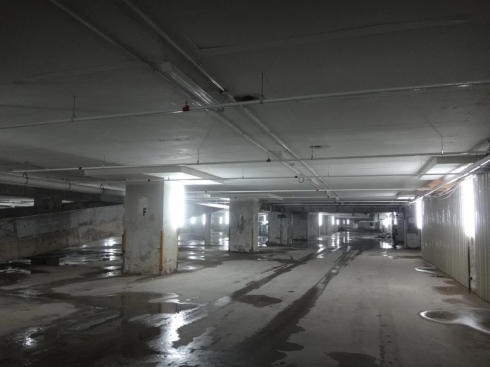
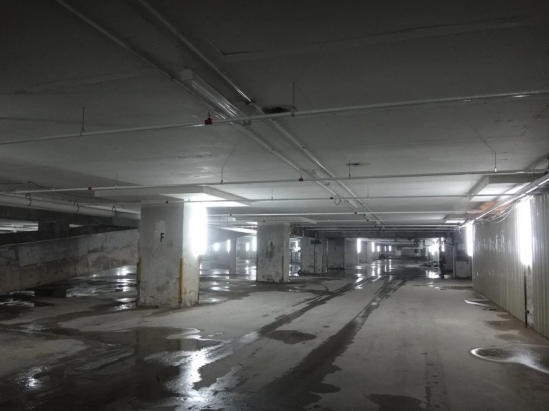

The Backrooms
Si no tienes cuidado y te sales de la realidad en las áreas equivocadas, terminarás en los Backrooms, donde no hay más que el hedor de la alfombra húmeda, la locura del papel tapiz amarillo y el interminable ruido de fondo de las luces fluorescentes al máximo zumbido, y aproximadamente novecientos millones de kilómetros de habitaciones vacías segmentadas al azar en las que puedes quedar atrapado. Dios te salva si escuchas algo deambulando cerca, porque seguro que te ha escuchado...
Galería de imágenes
 

Introducción
Suponemos que eres una persona normal y corriente que ha salido de la realidad (Los Frontrooms) y se ha adentrado en un nuevo y extraño mundo. Nos gustaria darte la bienvenida a los Backrooms, una dimensión alternativa donde las leyes de la física dejan de existir y la liminalidad define cada área. Muchas personas están atrapadas aquí como tú. Pero, que no cunda el pánico! Estas en el lugar adecuado para encontrar respuestas. Antes de aventurarte en el más allá, manten abierta esta base de datos o guarda una copia de nuestros archivos. Contienen toda la información necesaria para sobrevivir en este lugar y viajar por lo desconocido. Esta base de datos y sus archivos se actualizan con cada descubrimiento. Sin embargo, este lugar escapa a tal nivel de nuestro entendimiento que conocemos solo una pequeña parte de que es este lugar en realidad. No te preocupes, nuestros mejores investigadores y científicos estan trabajando al respecto.
¿Qué son los Backrooms?
Cada zona de este laberinto es aparentemente aleatoria. Apenas existe un sentido de continuidad. Por ello, la M.E.G. ha decidido etiquetar cada área con un "nivel" seguido de un número (Niveles Ordinales) en nuestra base de datos y archivos: Los niveles se enumeran generalmente por orden de descubrimiento o por conexiones con otros niveles. Cada nivel contiene su propio conjunto de características y objetos. Muchos de estos objetos representarán elementos de la realidad, pero pueden incluir propiedades especiales que los distinguen.
Y lo más importante de todo, sé que es duro pero... no se ha documentado nunca que alguien haya podido escapar de este lugar y regresar a su hogar. No se conoce ningún método para poder salir de este, infierno...
Pero no desesperes, este lugar es más grande de lo crees y hay más personas de las que te puedas imaginar habitando en este espacio liminal. Todos hemos pasado por lo mismo. Este es tu nuevo hogar.
No pierdas la esperanza y buena suerte, Wanderer!
Multimedia
Zumbido perpetuo de la ilumninación fluorescente del Nivel 0
Unico video captado de una entidad
Foto sacado por un vagabundo de un Smiler
Entidad del Nivel más peligroso
.jpg)
Imagen de unas latas de Agua de Almendras